Backend API CI/CD#
Currently, Ask Astro uses Google cloud run to run the API server,
and deploys the backend API with cloud build. You can find the cloud
build configuration in /api/cloudbuild.yaml.
Create cloud run service#
These steps create a cloud service and template for your cloud build on the Google Cloud Platform.
Go to
https://console.cloud.google.com/, and search for the Cloud Run service.On the Cloud Run page, click on CREATE SERVICE.
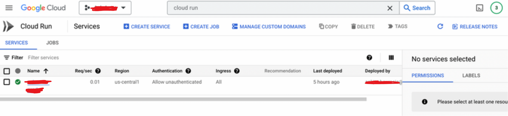
Select Continuously deploy new revision from source repository and Set up with cloud build
Select Repository provider as GitHub and click Next.
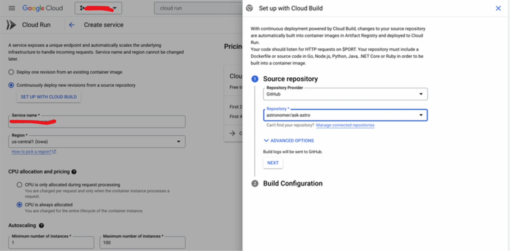
Set up the build configuration:
Branch name:
mainBuild type: Python via buildpacks
Build context directory:
/api
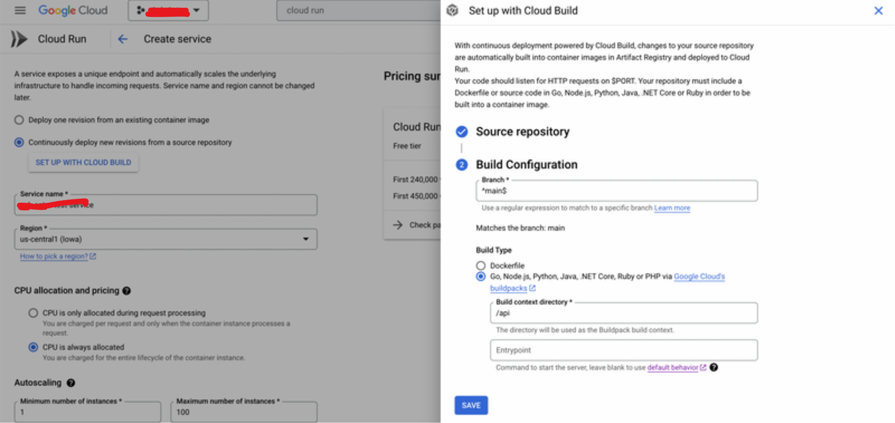
Add Service name, Region, CPU allocation and pricing, Autoscaling, and Ingress.
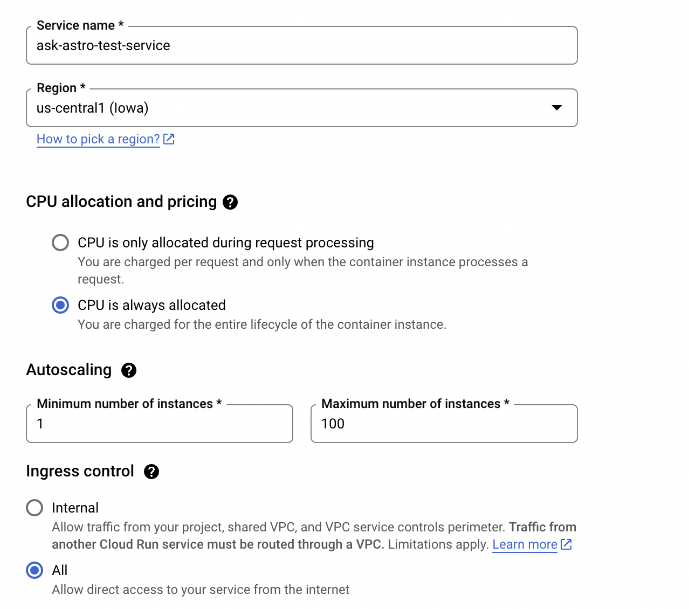
Allow Unauthenticated invocation and click on Create.
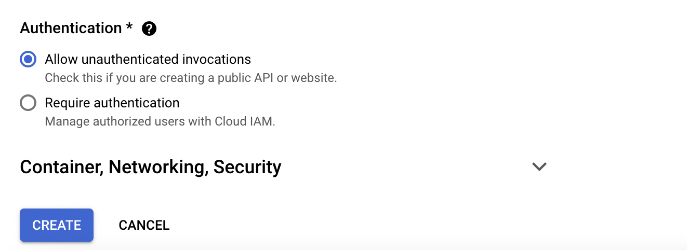
Add the required Environment variables to run the backend API.
After you create the service, visit the Created service page
Click on EDIT AND DEPLOY NEW REVISION
Add you Environment variable and click Deploy
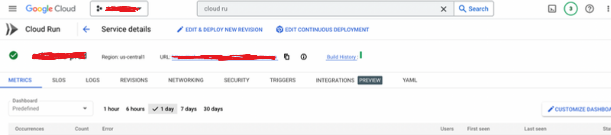
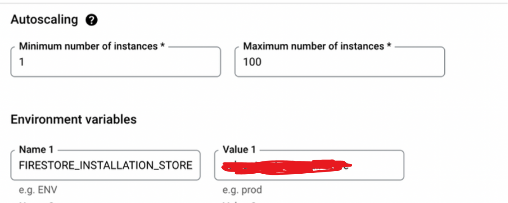
Update cloud build configuration#
Go to
https://console.cloud.google.com/and search for the cloud build service.
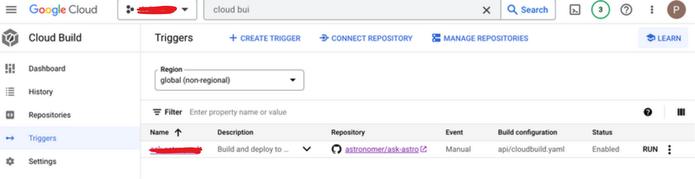
Click on Triggers. When you created a Cloud Run Service, it also made a Cloud Trigger Template that you can edit.
Click on the cloud build trigger template and update the following information:
Name, Description, Tag, and Event 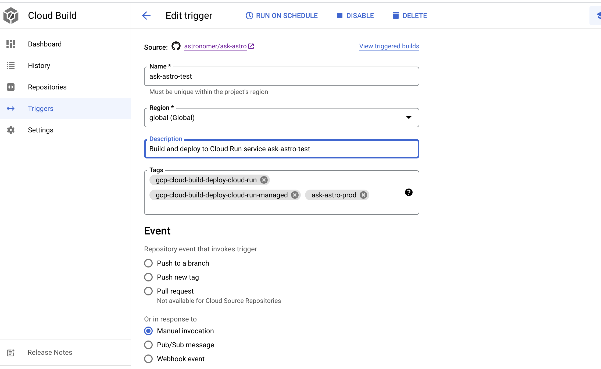
Select your Source and Branch. 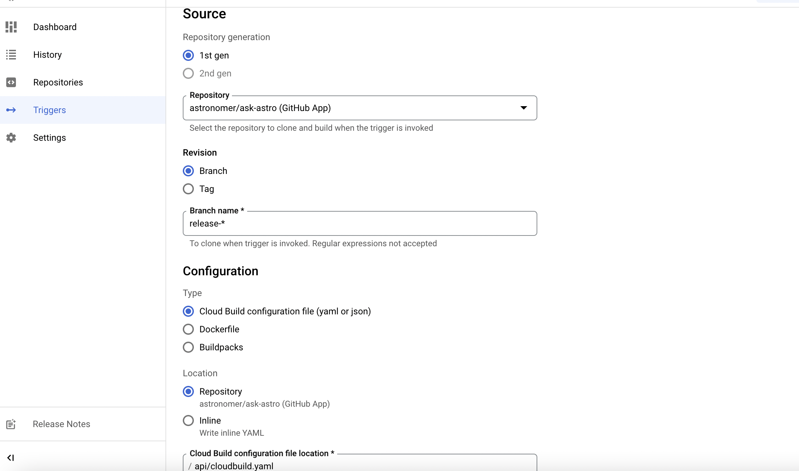
In Configuration, select Cloud Build configuration file and define the Cloud Build configuration file location as
api/cloudbuild.yaml.Don’t make any changes to the advance settings and click Save. 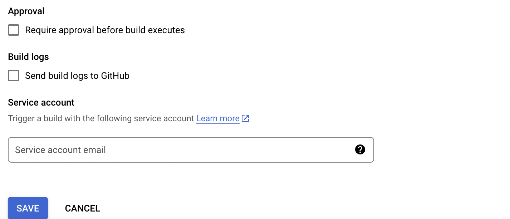
In settings, enable Cloud build and Cloud run.
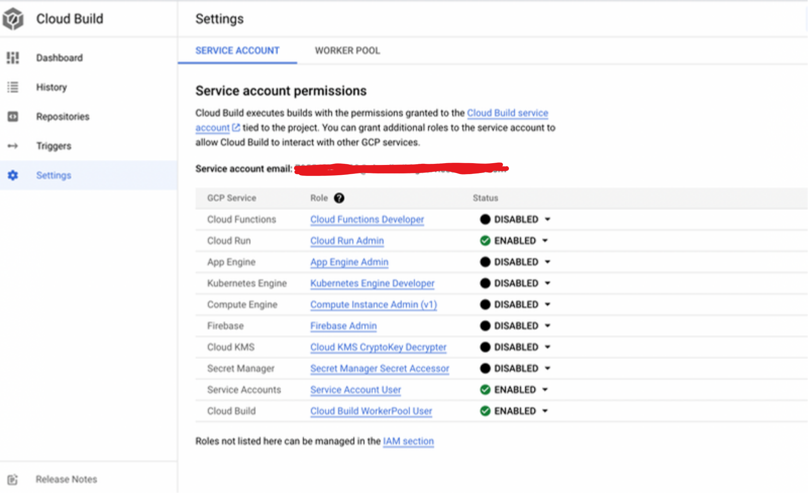